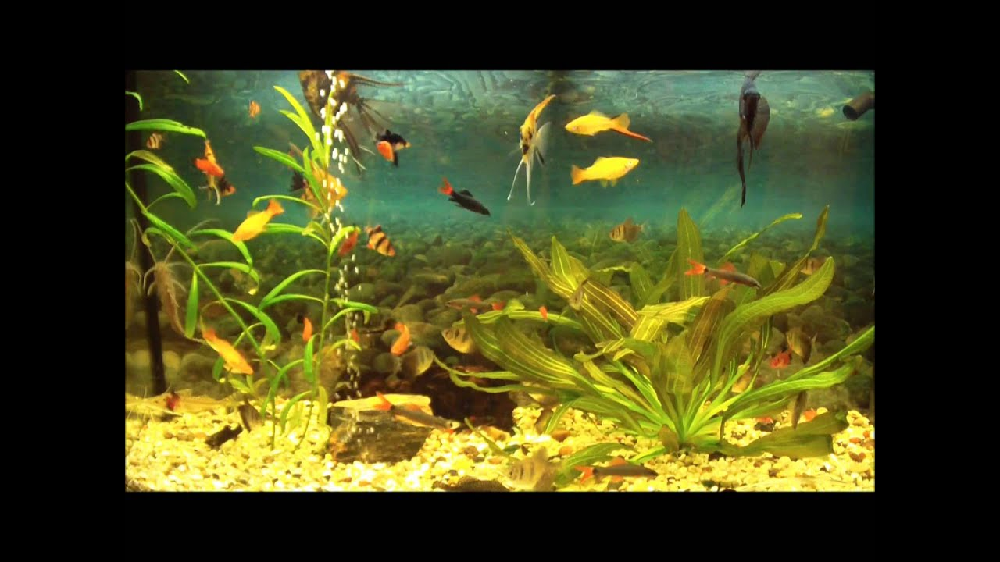

Akinių rėmeliai - Vizija | Optika
Skip to content Akcijos Naujienos Produktai Akiniai Saulės akiniai Akinių lęšiai Kontaktiniai lęšiai Priežiūros priemonės Tinklaraštis Salonai Kontaktai El. parduotuvė 0
Krepšelyje nėra produktų.
Tik originaliosprekės Atsiimkite prekes
patys 14 dienų grąžinimo
garantija Tik originalios
prekės Atsiimkite prekes
patys 14 dienų grąžinimo
garantija 0
Krepšelis
Krepšelyje nėra produktų.
Akcijos Kontaktiniai lęšiai Vienadieniai lęšiai Mėnesiniai lęšiai Trijų mėnesių lęšiai Prailginto nešiojimo lęšiai Toriniai astigmatiniai lęšiai Spalvoti kontaktiniai lęšiai Priežiūros priemonės Tirpalai Akių lašai Akinių valymo priemonės Dėklai akiniams Purkštukai Dovanų čekis Saulės akiniaiAkinių rėmeliai
[vc_row][vc_column][vc_row_inner type=”boxed”][vc_column_inner][vc_column_text el_class=”brand-logos”] [/vc_column_text][/vc_column_inner][/vc_row_inner][/vc_column][/vc_row][vc_row disable_element=”yes” css=”.vc_custom_1508154588718{padding-bottom: 100px !important;}” el_class=” hidden”][vc_column][vc_raw_html]JTNDZGl2JTIwaWQlM0QlMjJkb2xjZS1nYWJiYW5hJTIyJTNFJTNDJTJGZGl2JTNF[/vc_raw_html][/vc_column][/vc_row][vc_row disable_element=”yes” el_class=”cust-showcase hidden”][vc_column][vc_row_inner][vc_column_inner width=”2/3″][vc_raw_html]JTNDaDMlM0VEb2xjZSUyMCUyNiUyMEdhYmJhbmElM0MlMkZoMyUzRQ==[/vc_raw_html][vc_separator][vc_column_text] Dolce and Gabbana stilius: šiuolaikinė prabanga, svajonė, viduržemio jūros regiono ir „pagaminta Italijoje“ stiliaus atspindys. Kolekcija tinka jauniems/jaunatviškiems žmonėms, su ironišku požiūriu į gyvenimą, kuriantiems naują madą, eklektiškiems, novatoriams ir provokatoriams.[/vc_column_text][/vc_column_inner][vc_column_inner width=”1/3″][vc_single_image image=”865″ alignment=”center”][/vc_column_inner][/vc_row_inner][/vc_column][/vc_row][vc_row disable_element=”yes” css=”.vc_custom_1508154601377{padding-bottom: 100px !important;}” el_class=” hidden”][vc_column][vc_raw_html]JTNDZGl2JTIwaWQlM0QlMjJ2b2d1ZSUyMiUzRSUzQyUyRmRpdiUzRQ==[/vc_raw_html][/vc_column][/vc_row][vc_row disable_element=”yes” el_class=”cust-showcase hidden”][vc_column][vc_row_inner][vc_column_inner width=”1/3″][vc_single_image image=”866″ alignment=”center”][/vc_column_inner][vc_column_inner width=”2/3″][vc_raw_html]JTNDaDMlM0VWb2d1ZSUzQyUyRmgzJTNF[/vc_raw_html][vc_separator][vc_column_text] Vogue prekinis ženklas buvo sukurtas 1973 metais tuo pačiu vardu kaip ir populiarus mados žurnalas. Pastaraisiais metais, siekiant akcentuoti „Vogue“ madingumą, šio preikinio ženklo įvaizdį interpretuoja žinomi pasaulio modeliai. „Vogue“ akiniai visada pasižymi naujovišku dizainu, išsiskiria plačiu asortimentu, spalvų ir rėmų formų gausa. Tinka mėgstantiems madą, laisvos dvasios žmonėms, kurie kasdieniniame gyvenime mada naudojasi žaismingai.[/vc_column_text][/vc_column_inner][/vc_row_inner][/vc_column][/vc_row][vc_row disable_element=”yes” css=”.vc_custom_1508154621481{padding-bottom: 100px !important;}” el_class=” hidden”][vc_column][vc_raw_html]JTNDZGl2JTIwaWQlM0QlMjJyZWRidWxsJTIyJTNFJTNDJTJGZGl2JTNF[/vc_raw_html][/vc_column][/vc_row][vc_row disable_element=”yes” el_class=”cust-showcase hidden”][vc_column][vc_row_inner][vc_column_inner width=”2/3″][vc_raw_html]JTNDaDMlM0VSZWQlMjBCdWxsJTIwUmFjaW5nJTIwRXlld2VhciUzQyUyRmgzJTNF[/vc_raw_html][vc_separator][vc_column_text] Red Bull Racing Eyewear – profesionalaus sporto akinių kolekcijos linija, kurią žymi elipsės formos logo ir šio produkto tikslinė auditorija yra profesionalūs sportininkai bei aktyvaus gyvenimo būdo šalininkai. Tai sportiškumo, modernumo ir unikalumo derinys. Akiniai pagaminti iš ypač aukštos kokybės medžiagų. Kolekcija yra novatoriška, stipri ir dinamiška, kaip „Red Bull Racing“ komanda tiesiog įspudingas![/vc_column_text][/vc_column_inner][vc_column_inner width=”1/3″][vc_single_image image=”867″ alignment=”center”][/vc_column_inner][/vc_row_inner][/vc_column][/vc_row][vc_row disable_element=”yes” css=”.vc_custom_1508154638472{padding-bottom: 100px !important;}” el_class=” hidden”][vc_column][vc_raw_html]JTNDZGl2JTIwaWQlM0QlMjJlbXBvcmlvLWFybWFuaSUyMiUzRSUzQyUyRmRpdiUzRQ==[/vc_raw_html][/vc_column][/vc_row][vc_row disable_element=”yes” el_class=”cust-showcase hidden”][vc_column][vc_row_inner][vc_column_inner width=”1/3″][vc_single_image image=”337″ alignment=”center”][/vc_column_inner][vc_column_inner width=”2/3″][vc_raw_html]JTNDaDMlM0VFbXBvcmlvJTIwQXJtYW5pJTNDJTJGaDMlM0U=[/vc_raw_html][vc_separator][vc_column_text]Ši kolekcija – šiuolaikinė elegancija vyrams, prabangios medžiagos, kruopštus užbaigimas ir kokybiškas darbas. Emporio Armani yra iškart atpažįstamas dėka savo ženklo. Todėl jį renkasi daugumas žmonių mėgstančių pabrėžti savo stilių išskirtiniais prekiniais ženklais.[/vc_column_text][/vc_column_inner][/vc_row_inner][/vc_column][/vc_row][vc_row disable_element=”yes” css=”.vc_custom_1508154843434{padding-bottom: 100px !important;}” el_class=” hidden”][vc_column][vc_raw_html]JTNDZGl2JTIwaWQlM0QlMjJ2ZXJzYWNlJTIyJTNFJTNDJTJGZGl2JTNF[/vc_raw_html][/vc_column][/vc_row][vc_row disable_element=”yes” el_class=”cust-showcase hidden”][vc_column][vc_row_inner][vc_column_inner width=”2/3″][vc_raw_html]JTNDaDMlM0VWZXJzYWNlJTNDJTJGaDMlM0U=[/vc_raw_html][vc_separator][vc_column_text] Versace yra pirmaujantys tarptautiniai mados namai, tapę itališkos prabangos simboliu visame pasaulyje. Pagrindinis šio prekinio ženklo deklaruojamos vertybės – individualumas ir išsskirtinumas. „Versace“ akinius mėgsta ryškios asmenybės, kurioms nepriimtinas vidutiniškumas. Kolekcija išsiskiria ypatingai moderniu dizainu, ryškiomis spalvomis, ir padeda juos nešiojantiems jaustis madingais bei išsiskirti iš minios.[/vc_column_text][/vc_column_inner][vc_column_inner width=”1/3″][vc_single_image image=”868″ alignment=”center”][/vc_column_inner][/vc_row_inner][/vc_column][/vc_row][vc_row disable_element=”yes” css=”.vc_custom_1508154674001{padding-bottom: 100px !important;}” el_class=” hidden”][vc_column][vc_raw_html]JTNDZGl2JTIwaWQlM0QlMjJyYWxwaC1sYXVyZW4lMjIlM0UlM0MlMkZkaXYlM0U=[/vc_raw_html][/vc_column][/vc_row][vc_row disable_element=”yes” el_class=”cust-showcase hidden”][vc_column][vc_row_inner][vc_column_inner width=”1/3″][vc_single_image image=”869″ alignment=”center”][/vc_column_inner][vc_column_inner width=”2/3″][vc_raw_html]JTNDaDMlM0VSYWxwaCUyMExhdXJlbiUzQyUyRmgzJTNF[/vc_raw_html][vc_separator][vc_column_text] Ralph Lauren akinių rėmelių kolekcijoje harmoningai susilieja prabanga ir tradicijos, novatoriški elementai, vintažinė elegancija ir klasikiniai siluetai. Kolekcija tinka sekantiems madą, siekiantiems atnaujinto klasikinio stilingumo, vertinatiems ypatingą rafinuotumą, kokybę, rankų darbą.[/vc_column_text][/vc_column_inner][/vc_row_inner][/vc_column][/vc_row][vc_row disable_element=”yes” css=”.vc_custom_1508154686392{padding-bottom: 100px !important;}” el_class=” hidden”][vc_column][vc_raw_html]JTNDZGl2JTIwaWQlM0QlMjJyb2RlbnN0b2NrJTIyJTNFJTNDJTJGZGl2JTNF[/vc_raw_html][/vc_column][/vc_row][vc_row disable_element=”yes” el_class=”cust-showcase hidden”][vc_column][vc_row_inner][vc_column_inner width=”2/3″][vc_raw_html]JTNDaDMlM0VSb2RlbnN0b2NrJTNDJTJGaDMlM0U=[/vc_raw_html][vc_separator][vc_column_text] Rodenstock – tai pirmaujanti Vokietijos akinių lęšių bei rėmelių gamintoja. Įmonė buvo įkurta 1877 metais. Kompanija siūlo aukščiausios kokybės ir puikaus dizaino akinių rėmelių kolekcijas. Tinka kosmopolitiškiems, kultūringiems, žinantiems savo vertę, ieškantiems tobulumo, subtilumo žmonėms.[/vc_column_text][/vc_column_inner][vc_column_inner width=”1/3″][vc_single_image image=”870″ alignment=”center”][/vc_column_inner][/vc_row_inner][/vc_column][/vc_row][vc_row disable_element=”yes” css=”.vc_custom_1508154700024{padding-bottom: 100px !important;}” el_class=” hidden”][vc_column][vc_raw_html]JTNDZGl2JTIwaWQlM0QlMjJlbm5pLW1hcmNvJTIyJTNFJTNDJTJGZGl2JTNF[/vc_raw_html][/vc_column][/vc_row][vc_row disable_element=”yes” el_class=”cust-showcase hidden”][vc_column][vc_row_inner][vc_column_inner width=”1/3″][vc_single_image image=”325″ alignment=”center”][/vc_column_inner][vc_column_inner width=”2/3″][vc_raw_html]JTNDaDMlM0VFbm5pJTIwTWFyY28lM0MlMkZoMyUzRQ==[/vc_raw_html][vc_separator][vc_column_text] ENNI MARCO – tai Italų prekės ženklas, kuris susijungia eleganciją su paprastumu. Būtent šio prekinio ženklo įkūrėjai ir dizaineriai puikiai jaučian italų stilių bei modernumą. Akinių rėmeliai tinka reikliems, griežtą stilių mėgstantiems žmonėms, kurie derina modernumą kartu su kokybę. Gamybos metu kiekvieną modelį ir detalę paliečia žmogaus ranka. ENNI MARCO dizaineriai pabrėžia Italijos prabangą, stilių, bei tuo pačiu nepamiršta patogumo, elegancijos bei funkcionalumo.[/vc_column_text][/vc_column_inner][/vc_row_inner][/vc_column][/vc_row][vc_row disable_element=”yes” css=”.vc_custom_1508154712408{padding-bottom: 100px !important;}” el_class=” hidden”][vc_column][vc_raw_html]JTNDZGl2JTIwaWQlM0QlMjJ0cmV2aS1jb2xpc2V1bSUyMiUzRSUzQyUyRmRpdiUzRQ==[/vc_raw_html][/vc_column][/vc_row][vc_row disable_element=”yes” el_class=”cust-showcase hidden”][vc_column][vc_row_inner][vc_column_inner width=”2/3″][vc_raw_html]JTNDaDMlM0VUcmV2aSUyMENvbGlzZXVtJTNDJTJGaDMlM0U=[/vc_raw_html][vc_separator][vc_column_text] Trevi-Coliseum įmonė įsikūrė 1988 metais. Ši įmonė visame pasaulyje pristato savo prekių ženklus „Clark“, „Cotton Club“ ir „Coliseum“. „Trevi-Coliseum“ turi labai stiprią komandą, susidedančią iš profesionalių dizainerių ir technikų. „Coliseum“ kolekciją pamilsta klasikos gerbėjai, nes būtent šio ženklo rėmeliai alsuoja tikra elegancija, klasika bei orginaliu dizainu.
Kolekcija „Cotton Club“ labiau klasikiniai, modernūs akinių rėmeliai.
„Clark“ rėmelių kolekcijos sukurtos su išskirtiniu dėmesiu detalėms ir yra skirtos tiems, kurie vertina nepriekaištingą kokybę ir prieinamą kainą.
Plastiko gamyboje naudojamas kaučiukas NETOKSIŠKAS ir NEALERGIŠKAS![/vc_column_text][/vc_column_inner][vc_column_inner width=”1/3″][vc_single_image image=”320″ alignment=”center”][/vc_column_inner][/vc_row_inner][/vc_column][/vc_row][vc_row disable_element=”yes” css=”.vc_custom_1508154724093{padding-bottom: 100px !important;}” el_class=” hidden”][vc_column][vc_raw_html]JTNDZGl2JTIwaWQlM0QlMjJhbmEtaGlja21hbm4lMjIlM0UlM0MlMkZkaXYlM0U=[/vc_raw_html][/vc_column][/vc_row][vc_row disable_element=”yes” el_class=”cust-showcase hidden”][vc_column][vc_row_inner][vc_column_inner width=”1/3″][vc_single_image image=”871″ alignment=”center”][/vc_column_inner][vc_column_inner width=”2/3″][vc_raw_html]JTNDaDMlM0VBbmElMjBIaWNrbWFubiUzQyUyRmgzJTNF[/vc_raw_html][vc_separator][vc_column_text] Ana Hickmann yra viena gražiausių Brazilijos supermodelių. Būdama trylikos metų ji pradėjo modelio karjerą ir laimėjo ne vieną grožio konkursą. Ją pastebėjo modelių agentūros – prasidėjo kelionės po pasaulį. Ana Hickmann dirbo su puikiai žinomomis kompanijomis ir prekių ženklais kaip „Victoria’s Secret“, „Nivea“, „L’Oreal“, „Clairol“ ir „Bloomingdales“. Jos nuotraukos ne kartą papuošė žurnalų „Brazilian Vogue“, „Marie Claire“ ir „Elle“ viršelius. Tačiau suprasdama, kad modelio karjera laikina, ji sukūrė savo drabužių, kosmetikos, batų ir akinių rėmelių bei akinių nuo saulės mados liniją. Ana Hickmann akinių modeliai ypač prašmatnūs, geros kokybės, modernūs – skirti elegantiškoms ir drąsioms moterims.[/vc_column_text][/vc_column_inner][/vc_row_inner][/vc_column][/vc_row][vc_row disable_element=”yes” css=”.vc_custom_1508154742097{padding-bottom: 100px !important;}” el_class=” hidden”][vc_column][vc_raw_html]JTNDZGl2JTIwaWQlM0QlMjJza2FnYSUyMiUzRSUzQyUyRmRpdiUzRQ==[/vc_raw_html][/vc_column][/vc_row][vc_row disable_element=”yes” el_class=”cust-showcase hidden”][vc_column][vc_row_inner][vc_column_inner width=”2/3″][vc_raw_html]JTNDaDMlM0VTa2FnYSUzQyUyRmgzJTNF[/vc_raw_html][vc_separator][vc_column_text] Skaga – tai „Skandinavian Eyewear“ prekinis ženklas sukurtas Lajos Lazar 1948 metais. Autentiški akinių rėmeliai „Skaga“ yra kuriami patyrusių dizainerių. „Skaga“ išsskirtiniai akinių rėmeliai savimi pasitikinčiai asmenybei, klasiką mėgstantiems žmonėms. Šio ženklo rėmeliai alsuoja tikra elegancija bei originaliu dizainu.[/vc_column_text][/vc_column_inner][vc_column_inner width=”1/3″][vc_single_image image=”872″ alignment=”center”][/vc_column_inner][/vc_row_inner][/vc_column][/vc_row][vc_row disable_element=”yes” css=”.vc_custom_1508154759109{padding-bottom: 100px !important;}” el_class=” hidden”][vc_column][vc_raw_html]JTNDZGl2JTIwaWQlM0QlMjJraXNzLWtpbGwlMjIlM0UlM0MlMkZkaXYlM0U=[/vc_raw_html][/vc_column][/vc_row][vc_row disable_element=”yes” el_class=”cust-showcase hidden”][vc_column][vc_row_inner][vc_column_inner width=”1/3″][vc_single_image image=”332″ alignment=”center”][/vc_column_inner][vc_column_inner width=”2/3″][vc_raw_html]JTNDaDMlM0VLaXNzJTIwJTI2JTIwS2lsbCUzQyUyRmgzJTNF[/vc_raw_html][vc_separator][vc_column_text]Prekinį ženklą Kiss&Kill pristato kompanija „Marchon“. Šie modeliai skirti jaunatviškiems žmonėms, kurie mėgsta apsupti save novatoriškais aksesuarais . Kolekcija sudaro jaunatviški modeliai, skiriamas didelis dėmesys medžiagoms bei detalėms, taip pat įvairūs spalvų deriniai:oranžinė, žalia, raudona, geltona sukomponuota kartu su metalo splavomis – sidabru, auksu bei variu. Būtent jie ir atspindi šio prekinio ženklo kolekciją.[/vc_column_text][/vc_column_inner][/vc_row_inner][/vc_column][/vc_row][vc_row disable_element=”yes” css=”.vc_custom_1508154772040{padding-bottom: 100px !important;}” el_class=” hidden”][vc_column][vc_raw_html]JTNDZGl2JTIwaWQlM0QlMjJzb2xhbm8lMjIlM0UlM0MlMkZkaXYlM0U=[/vc_raw_html][/vc_column][/vc_row][vc_row disable_element=”yes” el_class=”cust-showcase hidden”][vc_column][vc_row_inner][vc_column_inner width=”2/3″][vc_raw_html]JTNDaDMlM0VTb2xhbm8lM0MlMkZoMyUzRQ==[/vc_raw_html][vc_separator][vc_column_text]Lenkų kompanija „AM group“ siūlo tiek klasikinius ir elegantiškus, tiek modernius, mėgstantiems kitokį stilių, ir kurie išsiskiria plačių spalvų spektru, geometriniais elementais, kreivėmis. SOLANO akinių rėmeliai atitinka net reikliausių žmonių skonį![/vc_column_text][/vc_column_inner][vc_column_inner width=”1/3″][vc_single_image image=”873″ alignment=”center”][/vc_column_inner][/vc_row_inner][/vc_column][/vc_row][vc_row disable_element=”yes” css=”.vc_custom_1508154789082{padding-bottom: 100px !important;}” el_class=” hidden”][vc_column][vc_raw_html]JTNDZGl2JTIwaWQlM0QlMjJqYXVndWFyJTIyJTNFJTNDJTJGZGl2JTNF[/vc_raw_html][/vc_column][/vc_row][vc_row disable_element=”yes” css=”.vc_custom_1508154795209{padding-top: 100px !important;padding-bottom: 100px !important;}” el_class=”cust-showcase hidden”][vc_column width=”1/3″][vc_single_image image=”331″ alignment=”center”][/vc_column][vc_column width=”2/3″][vc_raw_html]JTNDaDMlM0VKYWd1YXIlM0MlMkZoMyUzRQ==[/vc_raw_html][vc_separator][vc_column_text]Prabanga, išskirtinumas bei elegancija – tradicinių vertybių ženklas JAGUAR . Pilnai pateisindama elitinio brendo koncepciją JAGUAR rėmelių kolekcija derina orginalų dizainą, aukštą gamybos kokybę ir išskirtinį stilių. Veržlios linijos ir dinamiškos formos šių rėmelių nešiotojų įvaizdžiui suteiks sportiškumą ir ekspresyvumą. Šių ultramoderniųjų rėmelių kolekcijoje yra ir klasikinių modelių, patenkinančių net pačių reikliausių klientų poreikius.[/vc_column_text][/vc_column][/vc_row][vc_row][vc_column][vc_empty_space height=”100px”][/vc_column][/vc_row]
Parašykite komentarą Atšaukti atsakymą
This site uses Akismet to reduce spam. Learn how your comment data is processed .
El. parduotuvė Partneriai: Informacija Apie mus Karjera Kontaktai Salonai Pristatymas ir grąžinimas NaujienlaiškisUžsiprenumeruokite naujienlaiškį ir pirmieji sužinokite apie Optika Vizija akcijas, nuolaidas bei naujausias kolekcijas!
+370 614 11414
info@optikavizija.lt
Socialiniai tinklai
Copyright © 2020 Optika vizija. Visos teises saugomos Akcijos Naujienos Produktai Akiniai Saulės akiniai Akinių lęšiai Kontaktiniai lęšiai Priežiūros priemonės Tinklaraštis Salonai Kontaktai El. parduotuvė Akcijos Kontaktiniai lęšiai Vienadieniai lęšiai Mėnesiniai lęšiai Trijų mėnesių lęšiai Prailginto nešiojimo lęšiai Toriniai astigmatiniai lęšiai Spalvoti kontaktiniai lęšiai Priežiūros priemonės Tirpalai Akių lašai Akinių valymo priemonės Dėklai akiniams Purkštukai Dovanų čekis Saulės akiniai Prisijungti Naršydami „Optikavizija” sutinkate, jog naudojame slapukus, kurie užtikrina sklandų apsipirkimą. Daugiau informacijos Sutinku Privacy & Cookies Policy
Prisijungti
